What is Microsoft Computer Vision API?
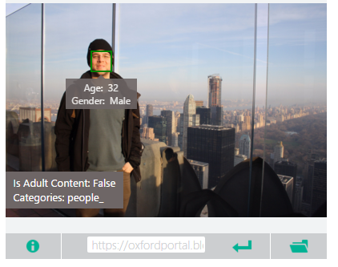Computer Vision API helps to recognize the thing in the picture. As you can see from the above image, Computer Vision API used application detected the person in the picture. And it is detecting whther this picture is an Adult Content or not. Let's get started to use this mysterious API!
Link to Microsoft Computer Vision API
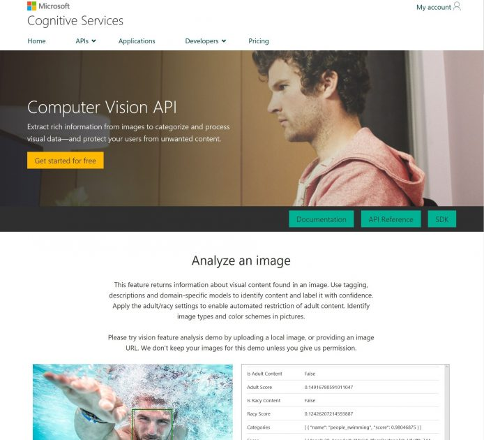This is URL which lets redirect you to Microsoft Computer Vision API.
https://azure.microsoft.com/en-us/services/cognitive-services/computer-vision/Getting a key to use the API
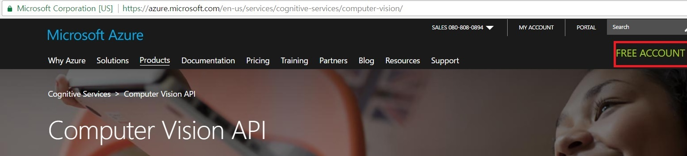
What you need to do first to use Microsoft Computer vision API is to get a key like other API. Where can we get the key by the way. First go to the website and click “FREE ACCOUNT”.
TIP!!
There is a documentation explaining about Obtaining Subscription Keys from Documentation category from the website. Based on my experiment, it does not work well only making 401 error. There also suggests a way to get a key using Microsoft Azure. So it is better to get a key from that route.(The bad thing is it gives only 30 days free trial, but it is enough to test and experience what Computer Vision API is.)
Now you should make a free account. Making an account is free as it says.
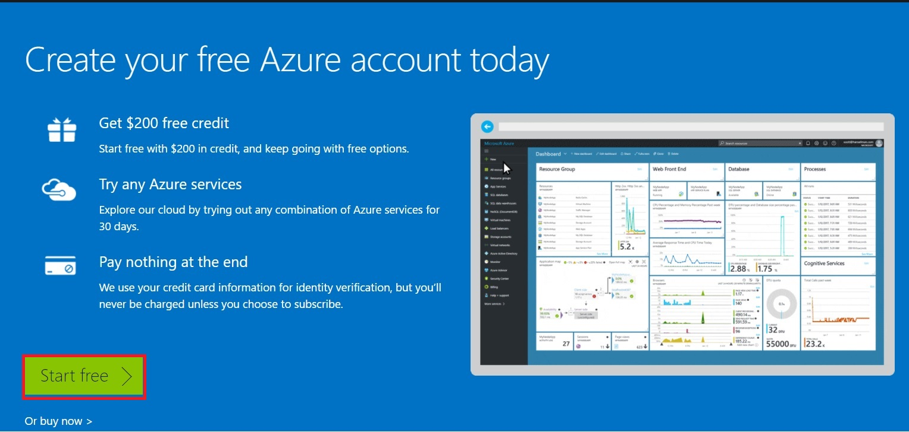You can see that page. As it says you can start free at first but it is free only for 30 days. Anyway, let’s get it started. Click “Start free” button. It is easy to make an account so I will skip that part here. As you make an account, and log in you can see this page. Click “Portal” button.
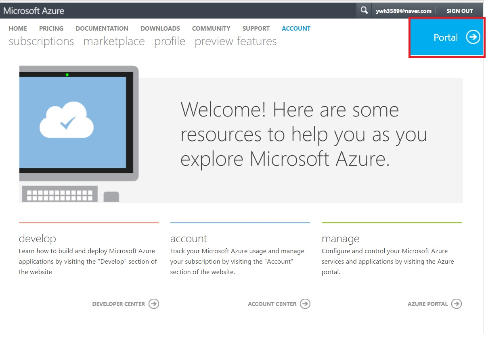You get to the portal. There are various sub directories on the left side of the page. Click “New” button.
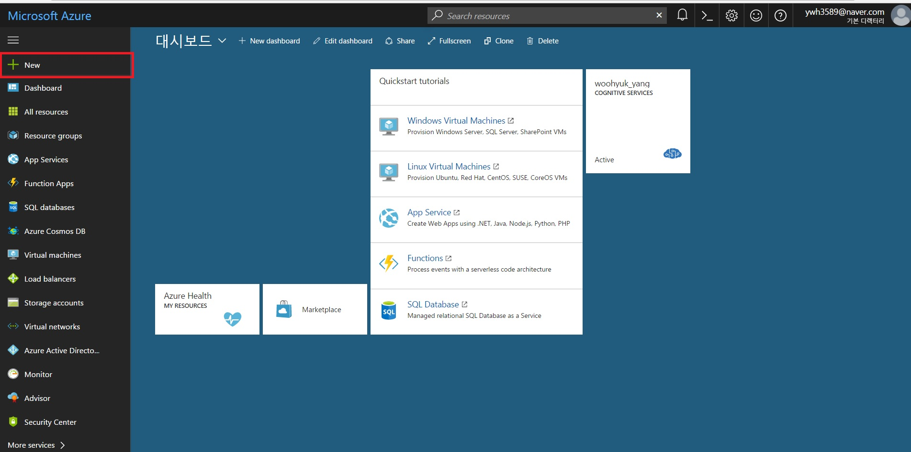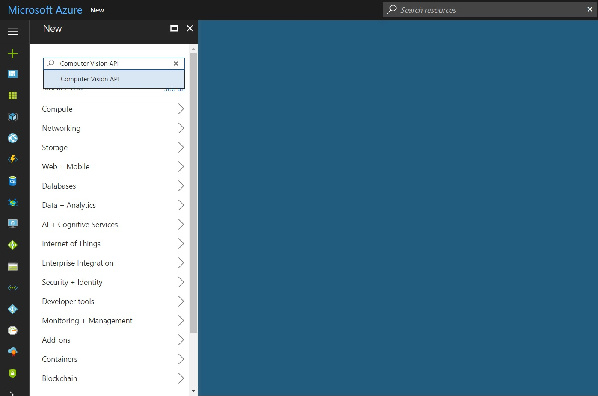
Look for Computer Vision API. And Click Computer Vision API.
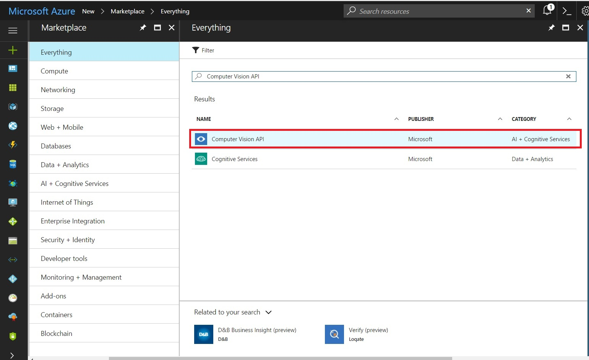Click "Create".
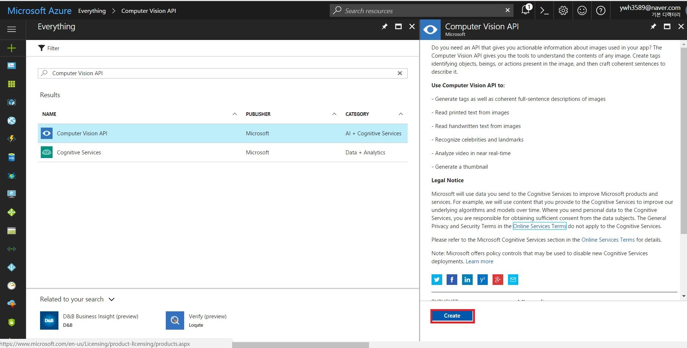Type and select everything required to create Computer vision API on your Dashboard. And click “Create”.
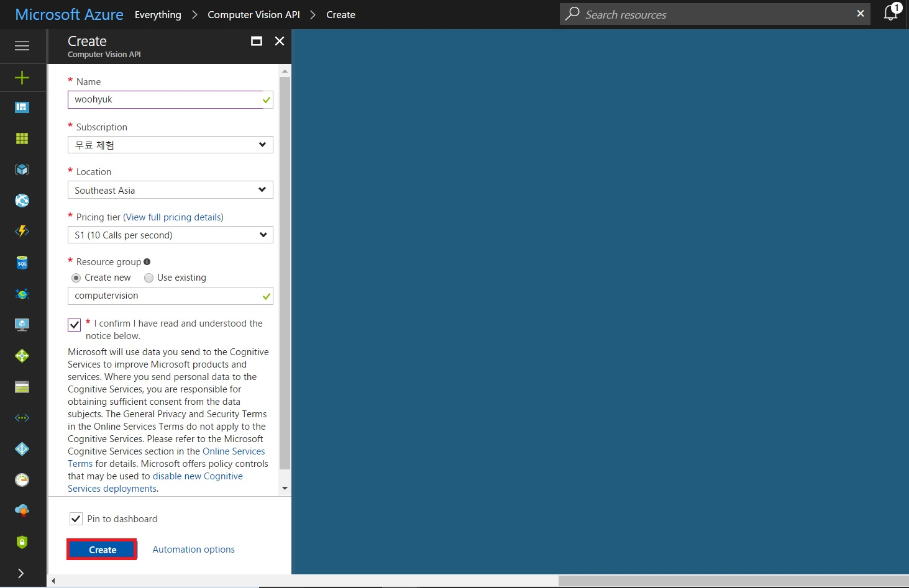Now you will see this page, and you can click “Show access keys…” link.
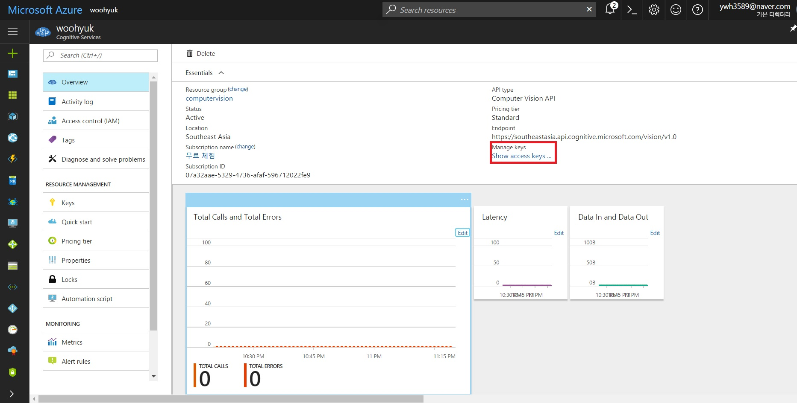And finally you can click that button to copy the key, which you can use to use Microsoft Computer Vision API. Congratulations!